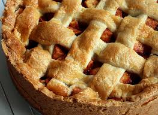

in alle kookboeken staat wel een recept voor Appeltaart, deze is zeker niet te missen.
Ingredienten
- 200 gram boter
- 200 gram witte basterdsuiker
- 400 gram zelfrijzend bakmeel
- 1 ei (de helft is voor het deeg, de andere helft voor het bestrijken)
- 8 gram vanillesuiker
- snufje zout
- 1,5 kilo zoetzure appels (ongeschild)
- 75 gram kristalsuiker
- 3 tl kaneel
- 15 gram paneermeel
Bereidingswijze
- Klop het ei los verdeel in twee delen. De ene is voor het deeg, de ander voor het bestrijken
- Meng boter, basterdsuiker, zelfrijzend bakmeel, het halve ei, vanillesuiker en een snufje zout tot een stevig deeg en verdeel in 3 delen.
- Schil nu de appels en snij deze in plakjes. Vermeng in een kopje de suiker met kaneel.
- Vet de springvorm in en bestuif met bloem.
- Gebruik één deel deeg om de bodem van de vorm mee te bedekken. Een tweede deel deeg gebruik je voor de randen. Strooi het paneermeel op de bodem van de beklede vorm.
De paneermeel neemt het vocht van de appels op.
- Doe de helft van de appels in de vorm en strooi hier 1/3 van het kaneel-suiker mengsel overheen. De overige appelschijfjes kun je nu ook in de vorm doen,
strooi de rest van het kaneel-suiker mengsel erover.
- Rol het laatste deel deeg uit tot een dunne lap en snij stroken van ongeveer 1 cm breed.
- Leg de stroken kruislings op de appeltaart. Met wat extra deegstroken werk je de rand rondom af. Gebruik het halve ei om de stroken in te smeren.
- Zet de taart iets onder het midden van de oven. Bak in 60 minuten op 170 graden gaar en goudbruin
- Laat de taart afkoelen in de vorm voordat je de ring verwijdert.

Tip: een klein beetje slagroom maakt het nog lekkerder!